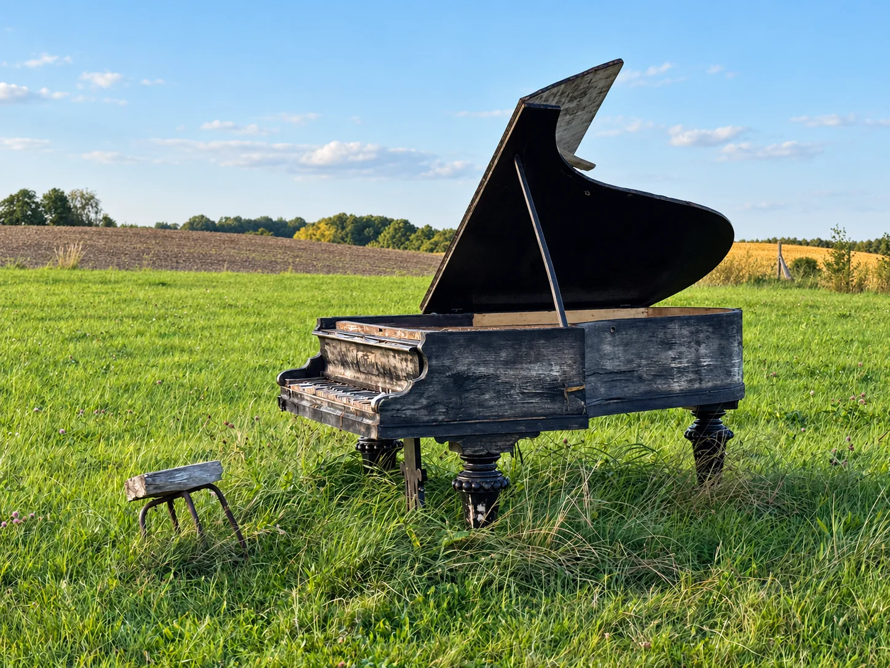

Ważne na wodzie
Jezioro Płaskie - bez napędu mechanicznego
Stan na 12.08.2026: na całym Jeziorze Płaskim obowiązuje zakaz używania napędu mechanicznego, także jeśli wpływasz na nie z Jezioraka. Żaglówka może płynąć pod żaglami, ale bez używania silnika. Dozwolone są też m.in. kajaki, łodzie wiosłowe, SUP-y i rowery wodne. Aktualny komunikat ZPK ↗
Jerzwałd przed Nienackim
Literacka historia Jerzwałdu jest głośna, ale sama wieś jest znacznie starsza. Najstarszy zachowany przywilej związany z miejscowością pochodzi z 23 lutego 1330 r. i dotyczy nadania ziem pruskiemu Skypelonowi. Pierwotna pruska nazwa osady była zapisywana jako Kejsy, później utrwaliła się forma Gerswalde.
Wieś została zniszczona podczas wojny trzynastoletniej, a ponownie lokowano ją na początku XVIII wieku jako wieś szkatułową. Wkrótce rozwój przerwała epidemia dżumy. Ta długa historia sprawia, że Jerzwałd warto czytać nie tylko przez Nienackiego, ale także jako fragment dawnego Oberlandu.
Jerzwałd Nienackiego
Pisarz kupił tutaj gospodarstwo w 1967 roku i mieszkał w Jerzwałdzie do śmierci w 1994 roku. Jego dom i grób na miejscowym cmentarzu tworzą najważniejsze materialne ślady tej historii.
Sam temat zasługuje na więcej niż akapit, dlatego przygotowaliśmy osobny rozdział o Jezioraku, Matytach, dawnym promie i innych miejscach, które weszły do literackiego świata Nienackiego.
Pan Samochodzik: pełny przewodnik →Jerzwałd, Jeziorak, Matyty, młyn i Skiroławki.Powieściowy młyn
Na skraju lasu pozostał dawny młyn, prawdopodobnie z przełomu XIX i XX wieku. Kiedyś działał w większym kompleksie z tartakiem i warsztatami. Po 1945 roku większość zabudowy została zniszczona, a sam młyn pełnił jeszcze inne funkcje, zanim zaczął popadać w ruinę.
Lokalne opracowania łączą go z Raz w roku w Skiroławkach. To dobry punkt dla osób, które lubią miejsca nieoczywiste, ale dostęp i stan obiektu trzeba sprawdzać na bieżąco.
Tajemniczy Kanał Jerzwałdzki / Zdryński
System z lat 30. XX wieku zaczyna się w rejonie Jeziora Płaskiego, przechodzi przez leśne akweny i w pewnym miejscu „znika” w lesie. Stare opracowania przedstawiają kilka hipotez jego przeznaczenia - od gospodarki rybnej po funkcję militarną - ale żadnej nie warto przedstawiać jako pewnik.
Czytaj więcej o kanale →Siedziba Parku Krajobrazowego
W Jerzwałdzie działa Zespół Parków Krajobrazowych Pojezierza Iławskiego i Wzgórz Dylewskich. To naturalny punkt odniesienia przed wyjściem do rezerwatów Jasne, Czerwica i Gaudy oraz na ścieżki edukacyjne.
Fortepian na łące - Raz w Roku w Jerzwałdzie
Czarny fortepian ustawiony pośród jerzwałdzkich łąk stał się jednym z najbardziej charakterystycznych obrazów tutejszego życia kulturalnego. Wydarzenie „Raz w Roku w Jerzwałdzie” łączy muzykę z tym, co w tej okolicy najważniejsze - przestrzenią, trawą, jeziorem i brakiem formalnego dystansu między sceną a publicznością.
Pomysłodawcą i organizatorem koncertów jest Mirek Mastalerz, mieszkaniec Jerzwałdu i człowiek zawodowo związany z fortepianami. Nazwa wydarzenia świadomie nawiązuje do powieści Zbigniewa Nienackiego Raz w roku w Skiroławkach. To szczególnie trafne tutaj - Nienacki przez wiele lat mieszkał w Jerzwałdzie, a okolica mocno przenikała do jego książek.
W kolejnych edycjach i koncertach organizowanych w Jerzwałdzie pojawiali się m.in. Leszek Możdżer, Adam Makowicz, Janusz Olejniczak, Waldemar Malicki, Krzesimir Dębski, Józef Skrzek, Artur Dutkiewicz, Sławek Jaskułke, Artur Moon, Adam Palma, Czerwony Tulipan i wielu innych muzyków. Leszek Możdżer wracał tu wielokrotnie, dzięki czemu Jerzwałd jest czymś więcej niż jednorazową ciekawostką na mapie wydarzeń.

Muzyka w naturze
Nie sala koncertowa, tylko łąka
To właśnie kontrast robi największe wrażenie: koncertowy fortepian, wybitni muzycy i publiczność siedząca na trawie. W 2020 r. podczas Jazzwałdu przy fortepianach spotkali się m.in. Leszek Możdżer, Waldemar Malicki i Janusz Olejniczak. Takie składy w niewielkiej wsi pośród lasów dobrze tłumaczą, dlaczego lokalna scena ma własną legendę.
Wydarzenie odbywa się w plenerze i zachowuje kameralny charakter. Aktualne daty i program warto sprawdzać w archiwum koncertów Jerzwałdu.